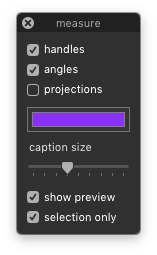

measureHandles¶
-
class
MeasureHandlesTool[source]¶ Bases:
hTools3.dialogs.glyphs.base.GlyphsDialogBaseA drawing helper which shows measurements and angles of Bezier handles in the Glyph View.
>>> from hTools3.dialogs.glyph.measureHandles import MeasureHandlesTool >>> MeasureHandlesTool()
-
title= 'measure'¶
-
key= 'com.hipertipo.hTools3.dialogs.glyphs.measureHandles'¶
-
settings= {'angleDraw': False, 'handlesDraw': True, 'boxDraw': False, 'strokeAlpha': 0.5, 'handlesColor': (1, 0, 0.5), 'captionFontSize': 11, 'handlesCaptionDraw': True}¶
-
angleDraw¶
-
handlesDraw¶
-
boxDraw¶
-
selectionOnly¶
-
handlesColor¶
-
handlesCaptionColor¶
-
captionFontSize¶
-